Part 1: Learn to Read the Ecosystem
1.1 Scouting the Hubs
I registered an account on the e-NABLE Hub to start my research. After browsing the Phoenix Hand V2 resources, I noticed the website layout is easy to read, but the comment sections feel overstimulating. The comments are laid out directly under each post, which clutters the view. A "tin box" or a toggle for comments would make it much cleaner. I also looked at the settings and think a dark mode or a darker background would help users with light sensitivity. I do like the community-driven feel of the forums and chapters, and the "recent social media" section is great for finding updated content.
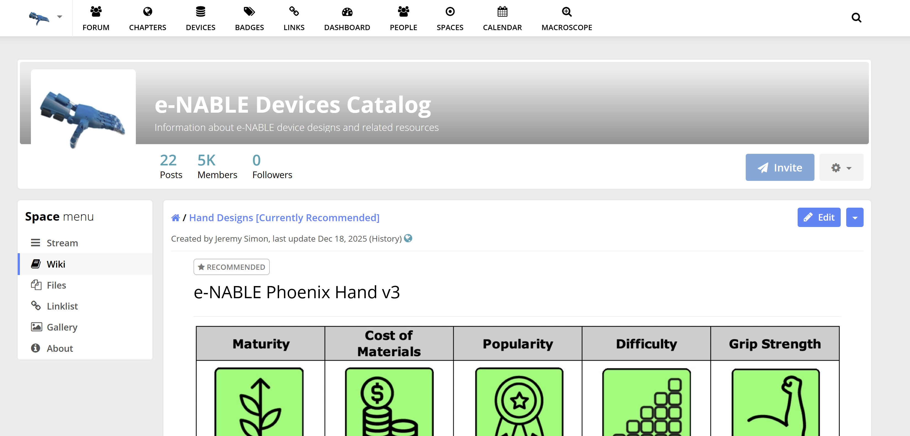
Reviewing the e-NABLE Hub interface (Click to enlarge)
I also explored the NIH 3D Print Exchange. Using the 3D View and WebXR Beta to inspect model 3DPX-020260 was a game changer. Seeing the hand in a digital 3D space helped me understand the scale before printing. Finally, Makers Making Change stood out for its practical catalog, like the modified Ms. Rachel doll which shows how open-source AT can be used for everyday play.
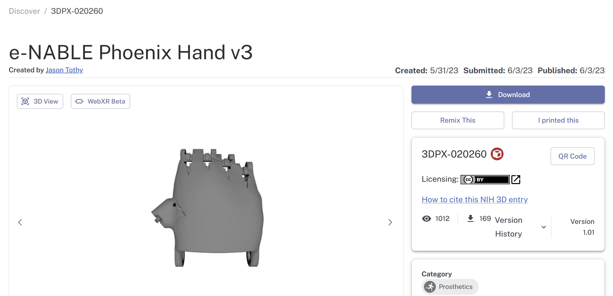
NIH web
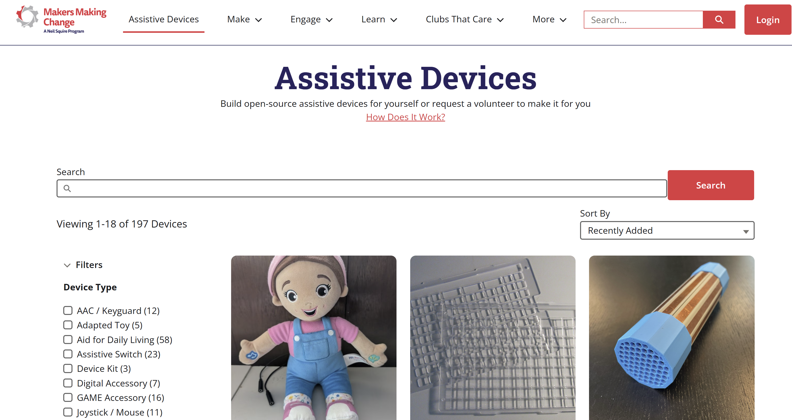
Makers Making Change: Accessible Toy Catalog
Part 2: 3D Printing and Assembly
My partner Sandra and I printed our hand at 150% scale using PLA on the Prusa Mini+. Scaling up the model meant significantly longer print times, which required us to be highly organized with our printing schedule to ensure all components were ready for the build.
The physical assembly was a challenging process; the instruction video moves very quickly, so we kept the written manual open the entire time to double-check pin alignment and component orientation. It definitely took both of us working together to keep the parts steady while driving the screws and managing the elastic tensioners.
Functional Analysis & Testing
After completing the assembly, we conducted a functional analysis to evaluate the performance of our 150% scale build. We confirmed that the wrist-driven mechanism is fully operational; however, the increased scale creates a significant mechanical trade-off. Our testing led to the following observations:
- The hand successfully performs a "power grasp." At 150% scale, the increased surface area of the fingertips helps with larger, lightweight objects, though the grip remains passive and entirely dependent on string tension.
- The wrist-driven mechanism is functional but requires a large range of motion. We found that precise tensioning is mandatory, as even a millimeter of slack prevents the fingers from closing completely.
- Testing revealed a total lack of fine motor precision. The design cannot perform a pincer grasp, making it impossible to pick up small, flat items like coins or credit cards without a task-specific modification.
- The 3D-printed joints exhibit noticeable lateral instability under load. Furthermore, the increased weight of the 150% scale model could lead to user fatigue during extended use.
Functional Testing Video
Testing the 150% scale power grasp and wrist flexion.
Part 3: Improved Documentation & Peer Testing
3.1 Supplemental Assembly Guide
During our build, we identified that the **string tensioning** and **cuff thermal-forming** were the weakest points in the existing documentation. To provide better stewardship for the e-NABLE community, we developed the following improved instructions:
Task: Tensioning & Knot Security
- Tools Needed: Wire and hot glue.
- Step 1: Thread the strings through the fingertip channels, ensuring no crossing inside the palm.
- Step 2: Use the wire to push the knot deep into the finger channels.
- Troubleshooting Tip: If the fingers do not snap back quickly, your elastic is too loose. If the wrist is hard to bend, your tension strings are too tight.
- The Fix: Instead of a screwdriver, apply a tiny drop of glue to the knot once the tension is perfect to prevent "creep" during use.
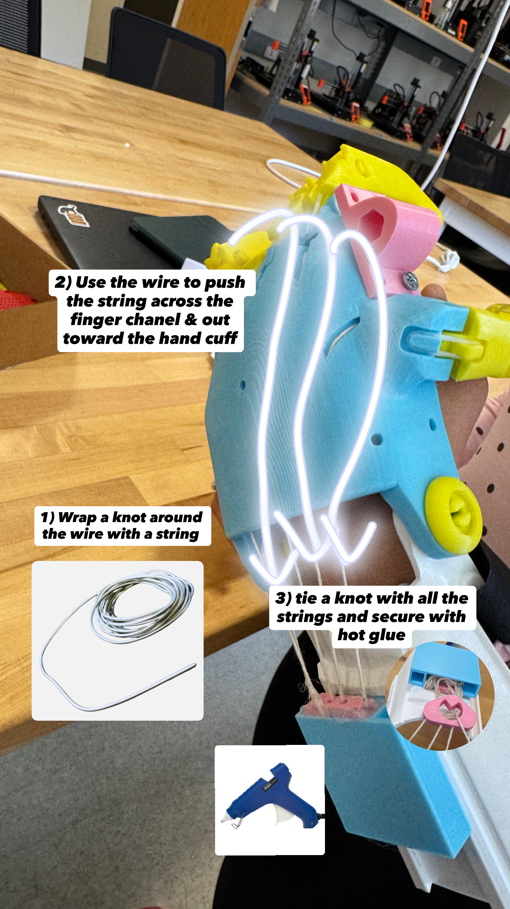
Our custom documentation: Using wire and glue for knot security (Click to enlarge)
3.2 Peer Usability Test (Gerardo’s Team)
In class, we exchanged our documentation with Gerardo’s team. While they found our written steps clear, we observed them struggling with the physical orientation of the screwdriver when seating the knots. We realized we had assumed the "angle of entry" was obvious, but it wasn't.
Reflection & Revision: Based on watching them, we revised our guide to include a specific note about using the wire as a lever rather than just a pusher. We also rated the documentation we tested using the Documentation Literacy Framework, giving it a high score for "Findability" but noting a need for better "Visual Logic" in the photo annotations.
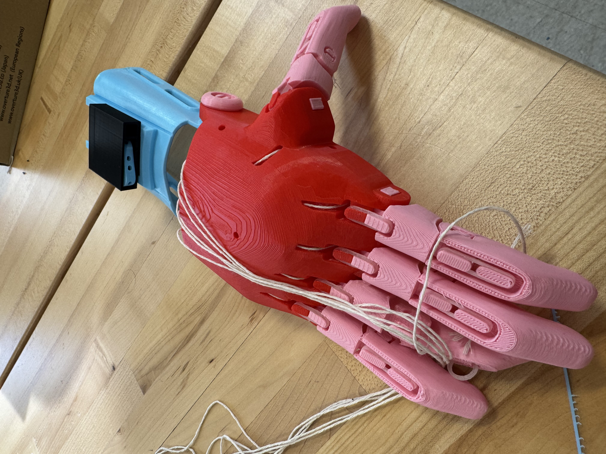
Peer Usability Testing: Observing Gerardo's team following our documentation fix (Click to enlarge)
Part 4: Task-Specific Modification
For this design challenge, I chose to develop a modification that enables holding a pencil or stylus for writing and drawing. The primary functional requirement was to create a stable, fixed-angle interface. This allows the user to write using broader shoulder and elbow movements, which is essential for users who may lack the fine motor grip strength required to hold a pencil traditionally.
4.1 SIT Design Methodology: Subtraction
I applied the SIT Subtraction pattern to this modification. Usually, the "system" of writing requires a complex pinch grasp involving the thumb, index finger, and muscular tension. By "subtracting" the thumb's role from the process, I shifted the entire burden of holding the pencil to a passive, friction-fit slot on the index finger. This simplifies the device's operation, as the user no longer needs to maintain active cable tension to keep the writing utensil secure.
4.2 Design & Fabrication Gallery
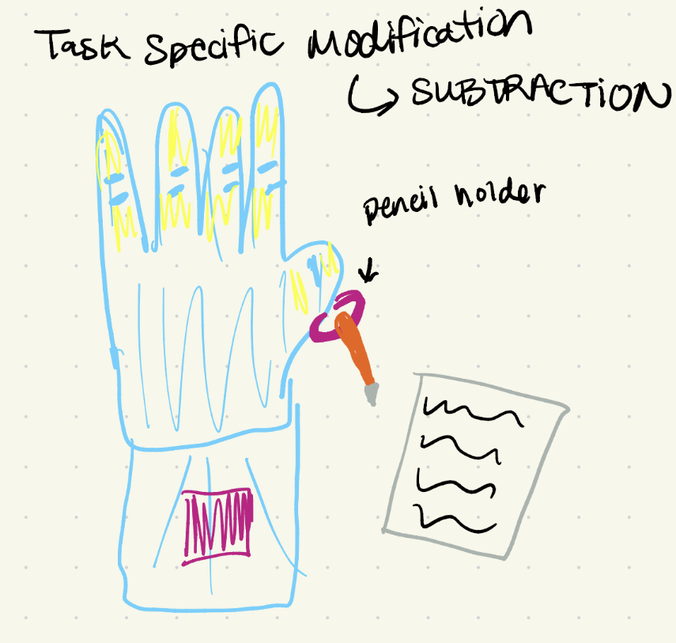
Initial Concept Sketch
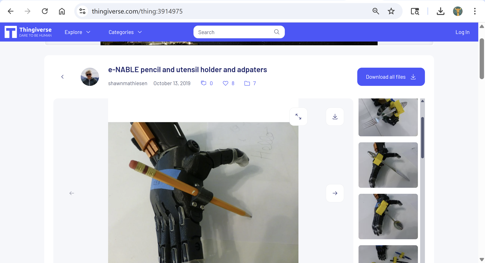
Thingiverse Research
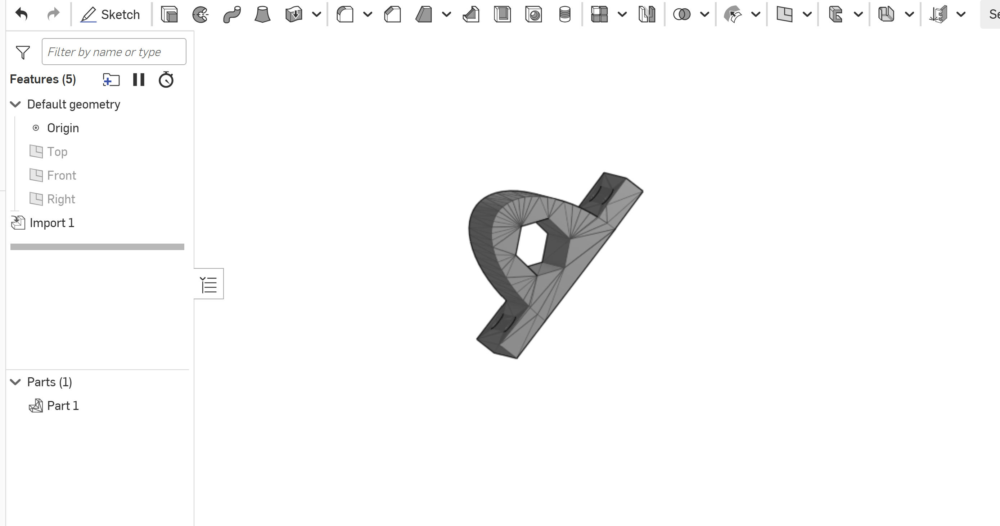
OnShape CAD Modeling
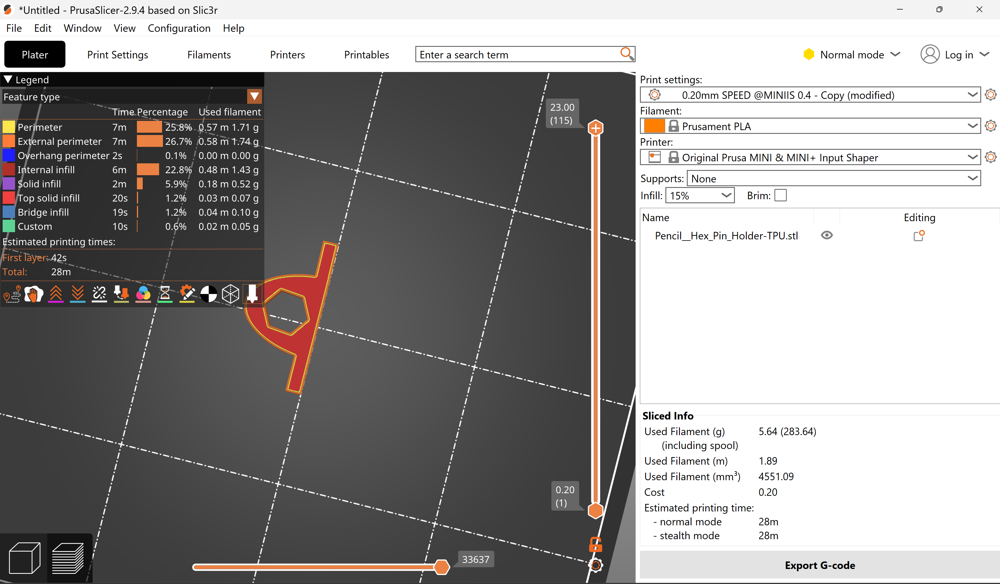
Slicing the Modification
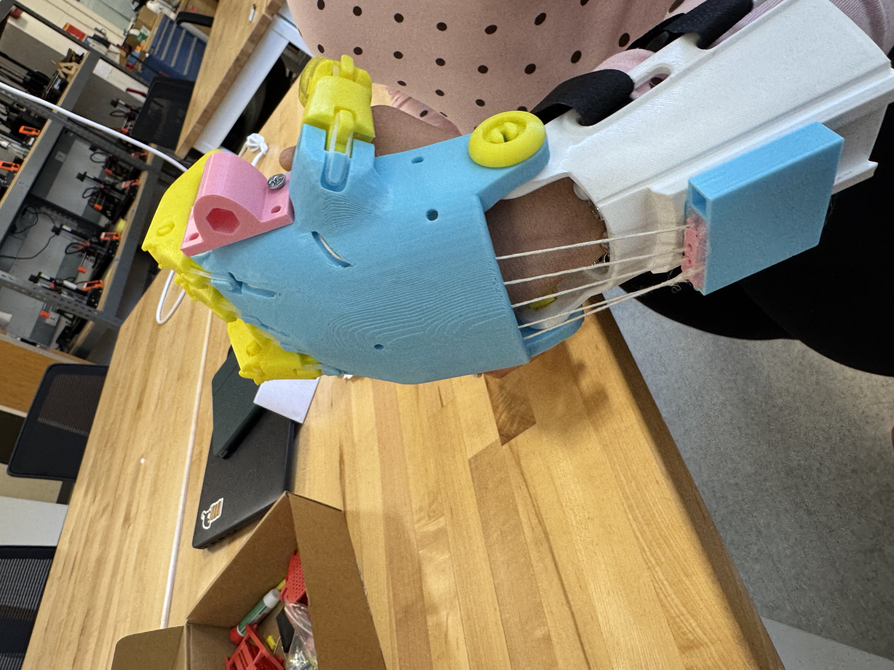
3D Printed Part Fitted to Hand
4.3 Testing & Functional Analysis
The modification successfully achieved the goal of stable writing. By utilizing a friction-fit slot, the pencil remains at a consistent angle relative to the hand.
- Functional Success: The slot provided enough grip to handle the downward pressure required for legible writing without the pencil sliding out.
- Iteration: My first print was slightly too loose. I iterated the design in OnShape to reduce the inner diameter of the slot by 0.2mm, ensuring a "snap-fit" that holds the pencil securely during rapid arm movements. Note: we left a small space that allowed the pencil to move freely rather than rigidly.
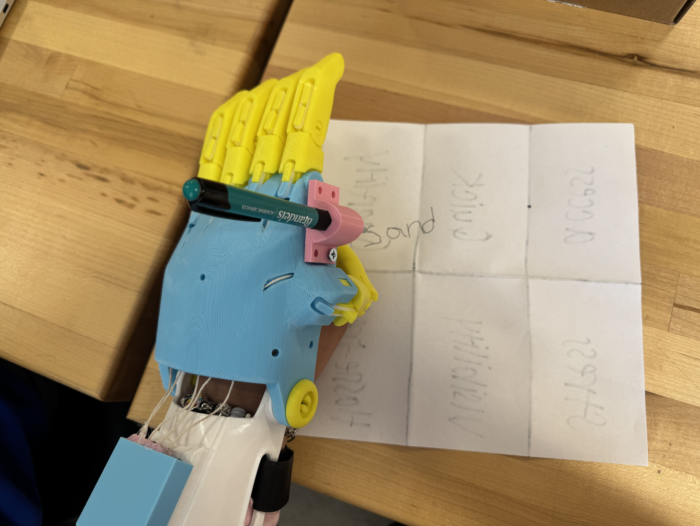
Testing the modification: Legibility and stability during the writing task (Click to enlarge)
Part 5: Reflection & Stewardship
5.1 Ethical Reflection
Applying the Microsoft Inclusive Design principle of "Recognize Exclusion," I realized that while we were able to engineer a "hot glue fix" for our string tensioning, the current e-NABLE documentation creates significant barriers. The reliance on fast-paced YouTube tutorials without clear, high-contrast captions or descriptive transcripts excludes makers with auditory impairments or those who struggle with visual processing.
As noted by experts like Sara Hendren, assistive technology should empower, but a volunteer-only model often lacks the rigorous universal design standards required to make these builds truly accessible to everyone. If the instructions themselves aren't inclusive, the resulting device can never be truly equitable.
5.2 Community Stewardship: The "Hot Glue" Fix
To contribute back to the community, I have documented our specific solution for string slippage. This artifact serves as a "lessons learned" guide for builders who find the standard knotting instructions insufficient.
Artifact: Knot Security Supplement
The Problem: At 150% scale, the mechanical leverage often causes the tension strings to slip out of the finger channels.
The Fix: After achieving perfect tension using a wire guide, apply a localized drop of hot glue directly to the knot. This creates a permanent mechanical stop that prevents "creep" during heavy use.
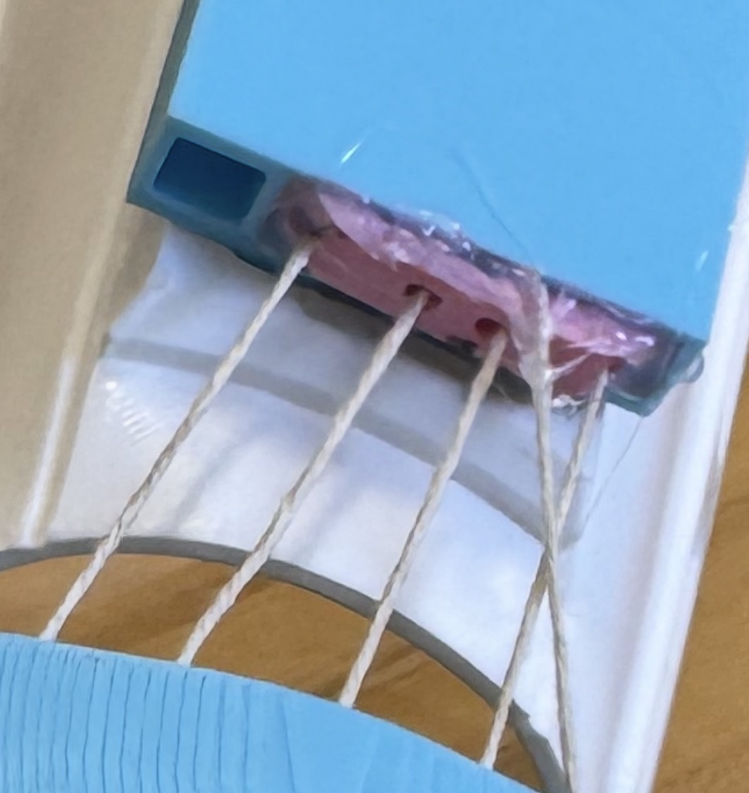
Stewardship Artifact: Close-up of the hot glue reinforcement to prevent tension loss (Click to enlarge)
5.3 Bridge to the Capstone
This project highlighted a major gap between "simple gripping" and "functional utility." For the upcoming team capstone, I want to focus on Precision Manipulation. My experience with the pencil holder showed that task-specific, modular attachments are often more effective than trying to mimic a human hand perfectly. I want our team to explore how we can design better interfaces for high-dexterity tasks that the current open-source ecosystem hasn't yet mastered.